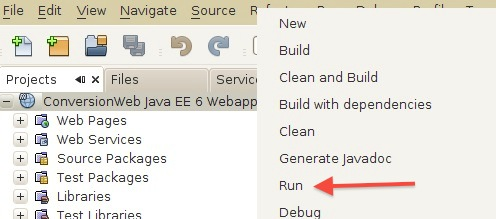
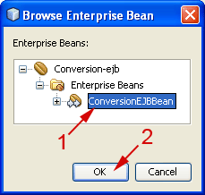

Creación de Servicios Web SOAP
- Los servicios Web desde la vista del Servidor
- El modelo de programación JAX-WS
- Implementación del servicio JAX-WS con el modelo de servlets
- Implementación del servicio Web con el modelo EJB
- Empaquetado y despliegue de un servicio Web
- Creación de un servicio Web con JDK 1.6
- Creación de un servicio Web JAX-WS con Maven
- Creación de servicios web con Netbeans
- Creación de servicios a partir de EJBs existentes
- Creación de servicios a partir del WSDL
- Paso de datos binarios
- Servicios web con estado
Vamos a crear nuestros propios Servicios Web, que ofrecerán una serie de métodos a los que se podrá llamar mediante RPC desde cualquier lugar de Internet mediante protocolos estándar (mensajes SOAP).
Deberemos por lo tanto ser capaces de interpretar en nuestras aplicaciones los mensajes SOAP entrantes de petición para la invocación de un método. Posteriormente, invocaremos el método solicitado, y con el resultado que nos devuelva deberemos construir un mensaje SOAP de respuesta y devolvérselo al cliente.
Si tuviésemos que introducir nosotros el código para interpretar este mensaje de entrada, y generar manualmente el mensaje de respuesta, el desarrollo de Servicios Web sería una tarea altamente costosa.
Es más, si se forzase al programador a componer el mensaje SOAP manualmente cada vez que desarrolle un Servicio Web, es muy probable que cometa algún error y no respete exactamente el estándar SOAP. Esto sería un grave problema para la interoperabilidad de los Servicios Web, que es una de las características que perseguimos con esta tecnología.
Para evitar estos problemas, utilizaremos librerías que nos permitan leer o generar mensajes SOAP para la invocación de métodos remotos, como es el caso de la API JAX-WS.
Además, para facilitar aún más la tarea de desarrollar Servicios Web, normalmente contaremos con herramientas que a partir de las clases que implementan nuestro servicio generen automáticamente todo el código necesario para leer el mensaje SOAP de entrada, invocar el método, escribir el mensaje SOAP de salida, y devolverlo al cliente.
Por lo tanto, nosotros deberemos centrarnos únicamente en la tarea de programar la funcionalidad que implementan nuestros servicios, olvidándonos del mecanismo de invocación de éstos.
JAX-WS es una especificación estándar de Sun Microsystems, pero no todos los servidores de aplicaciones utilizan esta librería para gestionar los Servicios Web. Por ejemplo, es el caso de Weblogic, que aunque está basado en JAX-WS, mantiene algunas extensiones propietarias sobre dicha API. Nos centraremos por lo tanto en el desarrollo de servicios con Netbeans y Glassfish, que incorpora las últimas versiones de las librerías estándar.
Los servicios Web desde la vista del Servidor
Como ya hemos visto, un documento WSDL define la interoperabilidad de los servicios Web e incluye la especificación sobre requerimientos de transporte y formato de los datos a través de la red. En general, un WSDL no impone ningún requerimiento sobre el modelo de programación del cliente o del servidor. La especificación de servicios Web para Java EE (JSR-109) define tres formas de implementar la lógica de negocio de servicio Web:
- Como un Bean de Sesión sin estado: la implementación del servicio Web (componente Port) se realiza creando un Bean de sesión sin estado, que implementa los métodos del SEI (Service Endpoint Interface) tal y como se describe en la especificación de EJB 3.0
- Como una clase Java: en este caso se implementa el Port como un Servlet JAX-WS
- Como un Singleton Session Bean: en este caso se crea un singleton session bean que implementa los métodos de un SEI según la especificación de EJB 3.1
Un componente Port define la vista del servidor de un Servicio Web. Cada Port proporciona un servicio en una dirección física particular definida por el atributo address de la definicion <port> de un WSDL. Un componente Port "sirve" una petición de operación definida en un <portType> de un WSDL. La implementación del servicio (Service Implementation Bean) depende del contenedor del componente Port, pero en general es una clase Java que puede implementar los métodos definidos en el SEI (Service Endpoint Interface). El SEI es un mapeado java del <portType> y <binding> asociado a un <port> de un WSDL. Un servicio Web es un conjunto de Ports que difieren únicamente en su dirección física, y son mapeados en componentes Port separados, cada uno con su potencialmente único, pero probablemente compartido, Service Implementation Bean. La siguiente figura muestra la vista del servidor de un Servicio Web.
El ciclo de vida del Port está completamente controlado por el contenedor, pero en general sigue el mismo ciclo de vida que el del propio contenedor. Un Port es creado e inicializado por el contenedor antes de que la primera llamada recibida en la dirección del <port> del WSDL sea servida. Un Port es destruido por el contenedor cuando éste considera que sea necesario hacerlo, como por ejemplo cuando el propio contenedor es sutting down. Una implementación de un servicio Web JAX-WS reside en un contenedor Web, y por lo tanto puede desplegarse en un servidor Web o un servidor de aplicaciones, una implementación EJB, en cambio, reside en un contenedor EJB y sólo podrá desplegarse en un servidor de aplicaciones.
Un componente Port asocia una dirección de puerto (port address de un WSDL) con la implementación del servicio (Service Implementation Bean). En general, el componente Port "pospone" la definición de los requerimientos del contenedor del servicio a la fase de despliegue, indicando dichos requerimientos en el descriptor de despliegue del componente. Un contenedor proporciona un listener en la dirección del puerto (port address de un WSDL) y un mecanismo para "enviar" la petición a la implementación del servicio Web. Un contenedor también proporciona servicios en tiempo de ejecución, tales como restricciones de seguridad y mapeados de referencias lógicas a referencias físicas de objetos distribuidos y recursos.
Un desarrollador declara un componente Port en un descriptor de despliegue de servicios Web. El descriptor de despliegue incluye el documento WSDL que describe el PortType y binding del servicio Web. Cuando se usa JAX-WS, no es necesario proporcionar dicho descriptor de despliegue. La mayor parte de la información del descriptor de despliegue se incluye en las anotaciones de la implementación del servicio. Podríamos utilizar el descriptor de despliegue para "sobreescribir" o mejorar la información proporcionada por las anotaciones de la implementación del servicio.
La plataforma Java EE 6, soporta las siguientes implementaciones de servicios Web: como un componente Web JAX-WS en un contenedor de Servlets, y como un componente EJB de sesión stateless o singleton.
El empaquetado de un servicio Web en un módulo Java EE es específico de la metodología de implementación, pero sigue los requerimientos para un fichero EJB-JAR o fichero WAR. Contiene los ficheros de clases java del SEI y los documentos WSDL del servicio Web. Además contiene el descriptor XML de despliegue que define los Ports del servicio y su estructura.
El modelo de programación JAX-WS
Para desarrollar una implementación de un servicio web (web service endpoint) podemos optar por dos puntos de partida: una clase Java que implementa el servicio Web o un fichero WSDL. Cuando comenzamos por una clase java, utilizaremos herramientas para generar los artefactos necesarios, entre ellos el WSDL del servicio. Cuando nuestro punto de partida es un fichero WSDL (junto con los ficheros de esquema que describen los tipos de datos usados en el servicio), utilizaremos herramientas para generar el SEI (Service Endpoint Interface)
Si comenzamos por una clase java, tendremos la seguridad de que la clase que implementa el servicio tiene los tipos de datos java adecuados, pero el desarrollador tienen menos control sobre el esquema XML generado. Si comenzamos por el WSDL y esquemas, el desarrollador tiene un control total sobre qué esquema se está usando, pero menos control sobre el endpoint del servicio generado y de las clases que utiliza.
Nosotros vamos a explicar en primer lugar cómo crear un servicio a partir de una clase java, y también veremos cómo utilizar Netbeans para crear un servicio a partir de un wsdl.
Cuando nuestro punto de partida es una clase java, tenemos que seguir ciertas restricciones en la implementación de nuestro servicio. Una implementación válida de un servicio web es una clase java que cumple las siguientes restricciones:
- La clase debe estar anotada con javax.jws.Webservice (o alternativamente con javax.xml.ws.Provider, si se desea trabajar directamente a nivel de mensajes XML)
- Podemos anotar cualquiera de sus métodos con javax.jws.WebMethod
- Todos sus métodos pueden lanzar la excepción java.rmi.RemoteException además de cualquier otra excepción propia del servicio
- Los parámetros de sus métodos y tipos de retorno deben ser compatible con JAXB (JAXB impone unas reglas para mapear tipos java con tipos de ficheros de esquema XML)
- Ningún parámetro y/o tipo de retorno pueden implementar la interfaz java.rmi.Remote ni directa ni indirectamente
La clase java anotada con @WebService define un SEI de forma implícita por lo que no será necesario proporcionar dicha interfaz. Podemos especificar de forma explícita una interfaz añadiendo el atributo endpointInterface a la anotación @WebService. En ese caso, sí es necesario proporcionar la interfaz que defina los métodos públicos disponibles en la clase que implementa el servicio.
Una implementación de un servicio Web que utiliza la anotación @WebService no es necesario que especifique la ubicación del WSDL. Si se utiliza el atributo wsdlLocation en la anotación @WebService, el fichero WSDL debe ser empaquetado junto con las clases java del servicio web.
A continuación explicaremos con más detalle cómo implementar el servicio utilizando el modelo de servlets (el servicio se ejecuta en un contenedor web) y ejb (el servicio se ejecuta en un contenedor EJB).
Implementación del servicio JAX-WS con el modelo de servlets
Un Service Implementation Bean que se ejecuta dentro de un contenedor Web debe seguir los siguientes requerimientos (algunos de los cuales ya los hemos indicado en el apartado anterior):
- La clase que implementa el servicio debe estar anotada con javax.jws.WebService (o alternativamente, con javax.xml.ws.Provider)
- Si se implementa el servicio Web partiendo de código java, la anotación javax.jws.WebService NO es necesario especificar el SEI, la clase que implementa el servicio implícitamente define un SEI. Los métodos de negocio de la implementación deben ser públicos, y NO pueden ser final o static. Solamente los métodos anotados con @WebMethod en la implementación del servicio son expuestos al cliente.
- Si se implementa el servcicio Web a partir del WSDL, el SEI generado a partir del WSDL debe estar anotado con javax.jws.WebService. La implementación del servicio debe estár también anotada con javax.jws.WebService. La implementación del servicio puede implementar el SEI, aunque no es necesario. En este caso se deben implementar todos los métodos indicados en el SEI. Los métodos de negocio de la implementación deben ser públicos, y NO pueden ser final o static. Se puede implementar métodos adicionales que no figuren en el SEI.
- La implementación del servicio debe tener un constructor público por defecto
- La implementación del servicio no debe guardar el estado
- La clase debe ser pública, no puede ser final ni abstracta
- La clase no debe implementar el método finalize()
Por ejemplo, podemos implementar nuestro servicio Web como:
package jaxwsHelloServer;
import javax.jws.WebService;
import javax.jws.WebMethod;
@WebService
public class Hello {
private String message = new String("Hola, ");
public void Hello() {}
@WebMethod
public String sayHello(String name) {
return message + name + ".";
}
}
Con esto habremos implementado la funcionalidad del servicio como una clase Java ordinaria, sin necesitar tener conocimientos de ninguna librería adicional.
De forma opcional, podemos añadir al servicio un campo context en el que se inyectará un objeto WebServiceContext que nos dará acceso al contexto del servicio:
...
@WebService
public class Hello {
@Resource
private WebServiceContext context;
...
}
Dado que realmente el servicio es un componente web, a través de este objeto podremos tener acceso a componentes de la API de servlets como la petición HTTP (HttpServletRequest), la sesión (HttpSession), etc.
Anotaciones
Podemos especificar la forma en la que se crea el servicio mediante diferentes anotaciones. Las principales anotaciones disponibles son:
| @WebService | Indica que la clase define un servicio web. Se pueden especificar como parámetros
los nombres del servicio (serviceName), del componente Port (portName),
del SEI del servicio (name), de su espacio de nombres (targetNamespace), y de la
ubicación del WSDL (wsdlLocation), que figurarán en el documento WSDL del servicio:
@WebService(name="ConversionPortType",
serviceName="ConversionService",
portName="ConversionPort",
targetNamespace="http://jtech.ua.es",
wsdlLocation="resources/wsdl/")
|
|
| @SOAPBinding | Permite especificar el estilo y la codificación de los mensajes SOAP utilizados para invocar el servicio. Por ejemplo:
@SOAPBinding(style=SOAPBinding.Style.DOCUMENT,
use=SOAPBinding.Use.LITERAL,
parameterStyle=
SOAPBinding.ParameterStyle.WRAPPED)
|
|
| @WebMethod | Indica que un determinado método debe ser publicado como operación del servicio. Si no se indica para ningún método, se considerará que deben ser publicados todos los métodos públicos. Si no, sólo se publicarán los métodos indicados. Además, de forma opcional se puede indicar como parámetro el nombre con el que queramos que aparezca la operación en el documento WSDL:
@WebMethod(operationName="eurosAptas")
public int euro2ptas(double euros) {
...
}
|
|
| @Oneway | Indica que la llamada a la operación no debe esperar ninguna respuesta. Esto sólo lo podremos hacer con métodos que devuelvan void. Por ejemplo:
@Oneway()
@WebMethod()
public void publicarMensaje(String mensaje) {
...
}
|
|
| @WebParam | Permite indicar el nombre que recibirán los parámetros en el fichero WSDL:
@WebMethod(operationName="eurosAptas")
public int euro2ptas(
@WebParam(name="CantidadEuros",
targetNamespace="http://jtech.ua.es")
double euros) {
...
}
|
|
| @WebResult | Permite indicar el nombre que recibirá el mensaje de respuesta en el fichero WSDL:
@WebMethod(operationName="eurosAptas")
@WebResult(name="ResultadoPtas",
targetNamespace="http://jtech.ua.es")
public int euro2ptas(double euros) {
...
}
|
|
| @WebFault | Se utiliza para anotar excepciones Java. Cuando utilizamos esta anotación en una
excepción estamos indicando que cuando sea lanzada por una operación del servicio web debe generar
un mensaje SOAP de respuesta con un SOAP Fault que nos indique el error producido. En el lado
del cliente la clase con dicha excepción se habrá generado en el stub para el acceso al servicio,
y al recibir el mensaje SOAP con el error el stub lanzará la excepción correspondiente. Es decir,
para el desarrollador será como si la excepción saltase directamente desde el servicio hasta el cliente.
@WebFault
public class ConversionFaultException extends Exception {
public ConversionFaultException(String msg) {
super(msg);
}
}
|
|
Estilo y codificación del servicio
Hemos visto que mediante la anotación @SOAPBinding podemos cambiar el estilo y la codificación del servicio. Los posibles estilos son:
- SOAPBinding.Style.RPC: Se utilizan mensajes SOAP orientados a RPC, en los que se codifican en XML las llamadas a métodos remotos.
- SOAPBinding.Style.DOCUMENT: Se utilizan mensajes SOAP orientados al documento. Dado que en estos mensajes se puede incluir cualquier tipo de documento XML, también se pueden utilizar para invocar operaciones de servicios.
Podemos especificar también la codificación:
- SOAPBinding.Use.LITERAL: Esta es la única codificación aceptada en el WS-I Basic Profile (BP), que da soporte a los servicios de tipo document/literal y RPC/literal.
- SOAPBinding.Use.ENCODED: Se trata de una codificación que permite representar una mayor variedad de estructuras de datos que la anterior, pero está desaprobada por el BP por ser la causa de gran cantidad de incompatibilidades entre servicios. De hecho JAX-WS es incompatible con los servicios de este tipo. Esta codificación se suele utilizar con servicios de tipo RPC, dando lugar al tipo RPC/encoded.
En el caso de los servicios de tipo document/literal, también podemos especificar la forma en la que se representan los tipos de datos de los parámetros de las operaciones:
- SOAPBinding.ParameterStyle.BARE: Los parámetros se pasan directamente.
- SOAPBinding.ParameterStyle.WRAPPED: Los parámetros se pasan envueltos en tipos de datos complejos.
Por defecto los servicios serán del tipo document/literal/wrapped.
Requerimientos de un servicio Web JAX-WS
Tipos de datos compatibles
Cuando trabajamos con JAX-WS, los tipos de datos que podremos utilizar como tipo de los parámetros y de valor de retorno de los métodos de nuestro servicio serán los tipos soportados por JAXB.
Podremos utilizar cualquiera de los tipos básicos de Java:
boolean byte double float int long short char
Además, también podremos utilizar cualquiera de los wrappers de estos tipos básicos:
java.lang.Boolean java.lang.Byte java.lang.Double java.lang.Float java.lang.Integer java.lang.Long java.lang.Short java.lang.Character
Las siguientes clases de Java también son aceptadas como tipos válidos por JAX-WS:
java.lang.String java.math.BigDecimal java.math.BigInteger java.util.Calendar java.util.Date javax.xml.namespace.QName java.net.URI
Además de estos datos, se permitirá el uso de colecciones cuyos elementos podrán ser de cualquiera de los tipos admitidos. Estas colecciones podrán ser arrays, tanto unidimensionales como multidimensionales, o clases del marco de colecciones de Java:
Listas: List ArrayList LinkedList Stack Vector Mapas: Map HashMap Hashtable Properties TreeMap Conjuntos: Set HashSet TreeSet
Implementación del servicio Web con el modelo EJB
Se puede utilizar un Stateless Session Bean, tal y como se define en la especificación de Enterprise Java Beans, para ser desplegado en un contenedor EJB. También se puede utilizar un Singleton Session Bean tal y como se define en la especificación EJB 3.1, para implementar un servicio Web JAX-WS para ser desplegado en un contenedor EJB.
Los requerimientos para crear una implementación de un servicio como un EJB de sesión sin estado y singleton, son las mismas que hemos visto en el apartado anterior para el modelo de programación con servlets.
Podemos anotar un bean de sesión sin estado con la anotación javax.ejb.Stateless. En este caso, la clase del bean ya no debe implementar la interfaz javax.ejb.SessionBean.
Un EJB de sesión sin estado y singleton que implementen un servicio Web utilizando la API de JAX-WS debería utilizar javax.xml.ws.WebServiceContext, el cual puede inyectarse utilizando la anotación @Resource, tal y como hemos visto en el ejemplo de la sección anterior.
En el caso de utilizar un bean de sesión singleton se utiliza la anotación javax.ejb.Singleton.
Por ejemplo, podemos implementar nuestro servicio Web como un Stateless Session Bean de la siguiente forma:
package jaxwsHelloServer;
import javax.jws.WebService;
import javax.jws.WebMethod;
import javax.ejb.Stateless;
@WebService
@Stateless
public class Hello {
private String message = new String("Hola, ");
public void Hello() {}
@WebMethod
public String sayHello(String name) {
return message + name + ".";
}
}
Empaquetado y despliegue de un servicio Web
Los componentes Port pueden empaquetarse en un fichero WAR o en un fichero EJB-JAR. Los componentes Port empaquetados en un fichero WAR deben usar una implementación de un servicio con el modelo de programación de servlets JAX-WS. Los componentes Port empaquetados en un fichero EJB-JAR deben utilizar un stateless o singleton bean para implementar el servicio web.
El desarrollador es responsable de empaquetar (bien incluyendo directamente, o referenciando), los siguientes elementos:
- el fichero WSDL (opcional si se utilizan anotaciones JAX-WS)
- la clase SEI (opcional con JAX-WS)
- la clase que implementa el servicio y sus clases dependientes
- los artefactos portables generados por JAX-WS (clases java generadas cuando se implementa un servicio Web a partir de una clase java, para ayudar al marshaling/unmarshaling de las invocaciones y respuestas del servicio web, así como de las excepciones específicas del servicio devueltas por dicho servicio)
- descriptor de despliegue en un módulo java EE (opcional si se usan anotaciones JAX-WS. Cualquier información contenida en este fichero "sobreescribe" la correspondiente información especificada con anotaciones)
El fichero WSDL se suele almacenar en un directorio wsdl, para su publicación durante el despliegue.
El descriptor de despliegue es específico del módulo que contenga el servicio web. En el caso del empaquetado EJB, el fichero descriptor de despliegue con la información del servicio web se localizaría en META-INF/webservices.xml. El directorio wsdl estará en META-INF/wsdl. Si utilizamos un war para empaquetar nuestro servicio web, el descriptor de despliegue se localiza en WEB-INF/webservices.xml, y el directorio que contiene el fichero WSDL se localiza en WEB-INF/wsdl.
Adicionalmente, se puede empaquetar el fichero de catálogo jax-ws-catalog.xml en el directorio META-INF/jax-ws-catalog.xml, en el caso de un módulo EJB, y WEB-INF/jax-ws-catalog.xml, en el caso de un módulo web. El fichero de catálogo se utiliza fundamentalmente para resolver las referencias a documentos de servicios web, específicamente documentos WSDL y ficheros de esquema.
Un ejemplo del contenido del fichero jax-ws-catalog.xml es el siguiente:
<?xml version="1.0" encoding="UTF-8" standalone="no"?>
<catalog xmlns="urn:oasis:names:tc:entity:xmlns:xml:catalog"
prefer="system">
<system systemId="http://localhost:8080/holaMundo/hola?WSDL"
uri="wsdl/localhost_8080/holaMundo/hola.wsdl"/>
<system systemId="http://localhost:8080/holaMundo/hola?xsd=1"
uri="wsdl/localhost_8080/holaMundo/hola.xsd_1.xsd"/>
</catalog>
Despliegue del servicio Web
JAX-WS 2.2.2 RI (Implementación de referencia de JAX-WS. RI= Reference Implementation) soporta dos modelos de despliegue para publicar servicios web. Una posibilidad es utilizar el modelo definido por JSR-109 (Web Services for Java EE), que utiliza el fichero webservices.xml para definir el despliegue de los servicios. Otra posibilidad es utilizar el modelo de despliegue específico de JAX-WS RI, que define la configuración del despliegue en los ficheros web.xml y sun-jaxws.xml. Esta segunda opción es la que vamos a comentar aquí.
Nosotros vamos a utilizar Glassfish 3.1 para realizar el despliegue. Glassfish incluye todas las librerías y clases necesarias para desarrollar/desplegar servicios web en la plataforma Java EE, de forma que no necesitaremos incluir ningún descriptor de despliegue en nuestro empaquetado, ni siquiera el fichero web.xml en el caso de utilizar el modelo de servlets.
En el caso de utilizar el modelo servlets, y por lo tanto empaquetar nuestras clases en un war, este tipo de despliegue (sin utilizar ningún descriptor) NO es portable. Para un contenedor no Java EE, por ejemplo un Tomcat, el fichero war que contiene el servicio web no es diferente al war de una aplicación servlet/jsp. Si queremos trabajar con servicios web, tenemos que elegir una implementación de JAX-WS e incluir en el war las librerías necesarias de JAX-WS.
Otra cuestión con respecto al tipo de despliegue sin descriptores, es que la implementación de nuestro servicio web no sería "descubierta" automáticamente por el contenedor (por ejemplo Tomcat). Para ello deberíamos incluir algunos descriptores de despliegue para "decirle" a la librería JAX-WS cómo queremos que se desplieguen nuestros servicios web. Estos descriptores son específicos de la librería que estemos utilizando. Así, por ejemplo, si decidimos desplegar nuestro servidor en un Tomcat, tendríamos que añadir en el directorio WEB-INF los ficheros sun-jaxws.xml y web.xml. Ambos ficheros contendrán información para realizar el "despliegue" de los servicios web.
Descriptores de despliegue JAX-WS: web.xml y sun-jaxws.xml
En el fichero web.xml declaramos el listener JAX-WS WSServletContextListener, que inicializa y configura el endpoint (componente port) del servicio web, y el servlet JAXWS WSServlet, que es el que sirve las peticiones al servicio, utilizando la clase que implementa dicho servicio. Un ejemplo de contenido de fichero web.xml podría ser éste:
<?xml version="1.0" encoding="UTF-8"?>
<web-app version="2.5" xmlns="http://java.sun.com/xml/ns/javaee"
xmlns:xsi="http://www.w3.org/2001/XMLSchema-instance"
xsi:schemaLocation="http://java.sun.com/xml/ns/javaee
http://java.sun.com/xml/ns/javaee/web-app_2_5.xsd">
<listener>
<listener-class>
com.sun.xml.ws.transport.http.servlet.WSServletContextListener
</listener-class>
</listener>
<servlet>
<servlet-name>NewsService</servlet-name>
<servlet-class>com.sun.xml.ws.transport.http.servlet.WSServlet</servlet-class>
<load-on-startup>1</load-on-startup>
</servlet>
<servlet-mapping>
<servlet-name>NewsService</servlet-name>
<url-pattern>/NewsService</url-pattern>
</servlet-mapping>
<session-config>
<session-timeout>
30
</session-timeout>
</session-config>
<welcome-file-list>
<welcome-file>index.jsp</welcome-file>
</welcome-file-list>
</web-app>
El fichero sun-jaxws.xml contiene la definición de la implementación del endpoint del servicio. Cada endpoint representa un port WSDL, y contiene toda la información sobre la clase que implementa el servicio, url-pattern del servlet, información de binding, ubicación del fichero WSDL, y nombres "cualificados" (qualified names) del port y service del WSDL. Si no especificamos la ubicación del fichero WSDL, éste será generado y publicado durante el despliegue. Por ejemplo, en el siguiente fichero sun-jaxws.xml indicamos que la implentación de nuestro servicio viene dada por la clase ws.news.NewsService (dicha clase debe estar anotada conc @WebService).
<?xml version="1.0" encoding="UTF-8"?>
<endpoints version="2.0" xmlns="http://java.sun.com/xml/ns/jax-ws/ri/runtime">
<endpoint implementation="ws.news.NewsService"
name="NewsService"
url-pattern="/NewsService"/>
</endpoints>
Responsabilidades del contenedor
El contenedor en el que resida nuestro servicio Web debe proporcionar el runtime de JAX-WS, para soportar peticiones de invocación sobre los componentes port desplegados en dicho contenedor. El soporte de ejecución de JAX-WS se encargará de convertir los mensajes SOAP de las llamadas entrantes al servicio en llamadas al API java de JAX-WS, y viceversa (convertir la respuesta java en mensaje SOAP). El contenedor será el responsable de:
- "Escuchar" en un puerto determinado, o en la URI de la implementación del servicio, esperando peticiones SOA/HTTP)
- "Parsear" el mensaje de entrada, dependiendo del tipo de "enlazado" binding del servicio
- "Mapear" el mensaje a la clase y método correspondiente, de acuerdo con los datos de despliegue del servicio
- Crear los objetos java adecuados para el sobre (envelope) SOAP de acuerdo a la especificación JAX-WS
- Invocar al Service Implementation Bean y al método de instancia con los parámetros java adecuados
- Capturar la respuesta de la invocación si el estilo es petición-respuesta
- Mapear los objetos de respuesta java al mensaje SOAP
- Crear el envelope adecuado del mensaje para su transporte
- Enviar el mensaje al cliente del servicio Web
Despliegue del servicio web
La herramienta de despliegue comienza el proceso examinando el artefacto desplegado para determinar qué módulos contienen servicios Web, para ello analiza las anotaciones de servicios web o los descriptores de despliegue contenidos en el módulo. A continuación obtiene la información de enlazado (binding), despliega los componentes y servicios web definidos en el módulo. Seguidamente publica los documentos WSDL que representan a los servicios web desplegados, configura al servidor e inicia la aplicación.
Creación de un servicio Web con JDK 1.6
Igual que en el caso de los clientes de servicios web, a partir de la versión 1.6 de JDK se incluyen herramientas para generar servicios web a partir de una clase java. Concretamente la herramienta que se utilizará para generar el servicio es wsgen, que al igual que wsimport se podrá utilizar tanto en línea de comando como en forma de tarea de ant.
Lo primero que deberemos hacer es compilar la clase que implementa el servicio al igual que cualquier otra clase Java, con la herramienta javac. Una vez hecho esto, generaremos el servicio con wsgen a partir de la clase compilada. Utilizaremos wsgen de la siguiente forma:
wsgen -cp <classpath> -s <src.dir> -d <dest.dir>
<nombre.clase.servicio>
La clase que implementa el servicio (<nombre.clase.servicio>) se especificará mediante su nombre completo, es decir, incluyendo el nombre del paquete al que pertenece. Podemos proporcionar otros parámetros para indicar la forma en la que se deben generar las clases, como el directorio donde queremos que guarde los fuentes de las clases generadas (<src.dir>), el directorio donde guardará estas clases compiladas (<dest.dir>), y el classpath, en el que deberá encontrarse la clase especificada.
En el caso concreto del servicio Hello definido anteriormente, podríamos generar las clases necesarias (después de haber compilado la clase Hello) de la siguiente forma:
wsgen -cp bin -s src -d bin
jaxwsHelloServer.Hello
Con esto habremos creado las clases necesarias para publicar el servicio. Con JDK 1.6 no será necesario contar con un servidor de aplicaciones para publicar este servicio, sino que lo podremos publicar desde cualquier aplicación Java. Podemos publicar el servicio de la siguiente forma:
package jaxwsHelloServer;
import javax.xml.ws.Endpoint;
public class Servicio {
public static void main(String[] args) {
Endpoint.publish(
"http://localhost:8080/ServicioWeb/Hello",
new Hello());
}
}
El método Endpoint.publish utiliza por defecto un contenedor servidor HTTP "ligero" que viene incluido con Java SE 6 y además nos permite desplegar nuestro servicio web sin tener que empaquetar ni desplegar nuestra aplicación. Esto es particularmente útil y práctico durante el desarrollo. De esta forma no es necesario tener en marcha Glassfish, Tomcat o cualquier otro servidor. De hecho, si previamente tenemos en marcha una instancia de algún otro servidor utilizando el mismo puerto, al hacer la llamada a Endpoint.publish nos dará un error informándonos de que dicho puerto ya está en uso.
Cuando ejecutemos la aplicación, podremos acceder al WSDL del servicio a través de cualquier navegador en la siguiente dirección:
http://localhost:8080/ServicioWeb/Hello?WSDL
Creación de un servicio Web JAX-WS con Maven
Vamos a ilustrar cómo, a partir de una clase java, y utilizando el modelo de programación de servlets, podemos construir, empaquetar y desplegar un servicio Web JAX-WS con Maven. Utilizaremos para ello la clase expertoJava.Hola como clase que va a implementar nuestro servicio Web.
Comenzamos creando una aplicación Web con Maven (similar a la que creamos para nuestro cliente Web del servicio en la sesión anterior)
mvn archetype:generate -DgroupId=expertoJava
-DartifactId=HolaMundo
-Dversion=1.0-SNAPSHOT
-DarchetypeArtifactId=webapp-javaee6
-DarchetypeGroupId=org.codehaus.mojo.archetypes
-DinteractiveMode=false
Añadiremos en nuestro pom el plugin para desplegar nuestro proyecto en glassfish (maven-glassfish-plugin), utilizando la goal glassfish:deploy:
<plugin>
<groupId>org.glassfish.maven.plugin</groupId>
<artifactId>maven-glassfish-plugin</artifactId>
<version>2.1</version>
<configuration>
<user>admin</user>
<passwordFile>/opt/glassfish-3.1.2.2/glassfish/domains/domain1/master-password
</passwordFile>
<glassfishDirectory>/opt/glassfish-3.1.2.2/glassfish</glassfishDirectory>
<domain>
<name>domain1</name>
<adminPort>4848</adminPort>
<httpPort>8080</httpPort>
</domain>
<components>
<component>
<name>HolaMundo</name>
<artifact>target/HolaMundo-1.0-SNAPSHOT.war</artifact>
</component>
</components>
</configuration>
</plugin>
Para generar los artefactos necesarios en la parte del servidor del servicio web no es necesario que incluyamos ningún plugin adicional en el pom de nuestro proyecto (plugin wsgen). Durante del despliegue se generarán automáticamente los ficheros necesarios (entre ellos el SEI de nuestro servicio Web) para poder utilizar nuestro servicio Web.
Ahora creamos nuestro servicio web como la clase src/main/java/expertoJava/Hola.java anotada con @Webservice. El código será el siguiente:
package expertoJava;
import javax.jws.WebMethod;
import javax.jws.WebParam;
import javax.jws.WebService;
@WebService
public class Hola {
@WebMethod(operationName = "hello")
public String hello(@WebParam(name = "name") String txt) {
return "Hola " + txt + " !";
}
}
Como ya se ha comentado, NO es necesario configurar el despliegue utilizando /src/main/webapp/WEB-INF/web.xml y /src/main/webapp/WEB-INF/sun-jaxws.xml porque vamos a desplegar nuestro servicio Web sobre Glassfish.
Ahora ya estamos en disposición de compilar y desplegar nuestro servicio web:
mvn clean package
Recordemos que el servidor de aplicaciones debe estar en marcha para poder desplegar nuestro servico web con:
./asadmin start-domain --verbose (desde /opt/glassfish-3.1.2.2/bin) mvn glassfish:deploy (desde el raiz de nuestro proyecto)
Podemos ver el wsdl generado en:
http://localhost:8080/HolaMundoRaizContexto/HolaService?wsdl
Suponemos que la raíz del contexto se ha definido como "HolaMundoRaizContexto" en el fichero src/main/webapp/WEB-INF/glassfish-web.xml. Por defecto, si no especificamos el nombre del servicio en el atributo serviceName de la anotación @WebService, éste es el nombre de la clase, seguido del sufijo "Service".
Dicho wsdl se genera automáticamente al desplegar el servicio. También se genera de forma automática código para probar los servicios desplegados. Siguiendo con nuestro ejemplo, podremos probar nuestro servicio en la dirección:
http://localhost:8080/HolaMundoRaizContexto/HolaService?tester
Creación de servicios web con Netbeans
Vamos a ver a continuación cómo crear servicios web paso a paso utilizando Netbeans. Seguiremos un ejemplo del servicio web de conversión (de euros a ptas y viceversa) para ilustrar el procedimiento que utilizaremos en Netbeans para crear un servicio web. Seguiremos los siguiente pasos:
Lo primero que necesitamos es un contenedor en el que crear nuestros servicios. Este contenedor será normalmente un proyecto web de Netbeans, aunque también podríamos utilizar un módulo EJB. Para nuestro ejemplo guiado vamos a crear un nuevo proyecto web llamado ConversionWeb al que añadiremos nuestro servicio.
Una vez tenemos el proyecto web en el que introducir el servicio, pinchamos sobre él con el botón derecho y seleccionamos New > Web Service ... para añadir un servicio web.
Introduciremos el nombre que le queremos dar al servicio (nombre de la clase que implementará el servicio) y el paquete en el que estará. Aquí podemos crear un servicio web desde cero, o bien utilizar un EJB de sesión existente. Si utilizásemos esta segunda opción, los métodos del EJB se ofrecerían como operaciones del servicio web de forma automática, sin necesidad de hacer nada más. Para nuestro ejemplo vamos a quedarnos con la opción por defecto, que es crear el servicio web desde cero en una nueva clase Java plana.
Una vez pulsemos el botón Finish se creará el servicio. En la vista de código podemos ver que se ha creado la clase ConversionSW.java.
Ahora vamos añadir una operación a nuestro servicio, pulsando con el botón derecho sobre el servicio creado y eligiendo la opción "Add operation".
Al añadir una operación deberemos especificar su nombre, el tipo de datos devuelto, y sus parámetros. En nuestro caso crearemos la función euro2ptas, con un parámetro euros de tipo double, y que devuelve un valor de tipo int.
Una vez añadida la operación, en la vista de código vemos el esqueleto de la implementación de nuestro servicio. Deberemos introducir en el método euro2ptas el código que realice la conversión de euros a pesetas.
Con esto ya tenemos implementado el servicio. Ahora podemos desplegar nuestro servicio con la opción "Run", con el botón derecho sobre el nodo del proyecto.

Podemos ver cómo está configurada por defecto la opción "Run" del menú contextual del proyecto (y también el resto de opciones de dicho menú), seleccionando "Properties" y a continuación Actions en el panel de la izquierda, y la acción "Run Project" de la lista de acciones de la derecha. En la siguiente figura se muestra el comando maven que se ejecuta cuando seleccionamos la opción "Run" del menú contextual del proyecto.
Una vez la aplicación esté ejecutándose en el servidor, podremos probar el servicio pinchando sobre él servicio Web con el botón derecho y seleccionando la opción Test Web Service.
Se abrirá en el navegador una web desde la que podremos probar el servicio. En ella podremos observar un enlace al documento WSDL que define el servicio, el cual nos resultará de utilidad cuando queramos crear un cliente que acceda a él, y la lista de operaciones que ofrece. Para cada operación tendremos cuadros de texto para introducir el valor de los parámetros de entrada que necesita, y un botón para invocarla.
Si probamos la operación euro2ptas pasando como parámetro 18.95, veremos el resultado de invocar el servicio, y además abajo en la misma página se mostrarán los mensajes SOAP utilizados para dicha invocación.

Creación de servicios a partir de EJBs existentes
Además de poder crear servicios web desde cero, también podremos crearlos a partir de EJBs existentes. De esta forma lo que estaremos haciendo es exportar las operaciones de los EJBs en forma de servicios web, para poder acceder a ellas desde aplicaciones desarrolladas en otras plataformas o en cualquier otro lugar de la red.
Con Netbeans crear un servicio web a partir de un EJB es inmediato. Supongamos que tenemos un EJB en nuestra aplicación llamado ConversionEJBBean, que proporciona las operaciones euros2ptas y ptas2euros. Podremos exportar dichas operaciones en forma de servicio web de la siguiente forma:
Crearemos un nuevo servicio web en nuestro proyecto, con New->Web Service...al igual que en el caso anterior.
Ahora, además del nombre del servicio y el paquete en el que queremos crear sus clases, deberemos especificar que cree el servicio web a partir de un EJB (Create Web Service from Existing Session Bean), y pulsamos el botón Browse ... para seleccionar el EJB a partir del cual queramos crear el servicio.
Seleccionaremos el EJB que queremos utilizar (en nuestro caso ConversionEJBBean), y pulsamos OK y a continuación Finish para finalizar la creación del servicio web.

Con esto podremos acceder a las operaciones de nuestro EJB de sesión mediante un servicio web. A continuación mostramos el código de nuestro servicio Web, creado a partir del EJB existente:
package jtech;
import javax.ejb.EJB;
import javax.jws.WebMethod;
import javax.jws.WebParam;
import javax.jws.WebService;
@WebService(serviceName = "ConversionSW")
public class ConversionSW {
@EJB
private jtech.ConversionEJBBeanLocal ejbRef;
@WebMethod(operationName = "euro2ptas")
public int euro2ptas(@WebParam(name = "euros") double euros) {
return ejbRef.euro2ptas(euros);
}
@WebMethod(operationName = "ptas2euros")
public double ptas2euros(@WebParam(name = "ptas") int ptas) {
return ejbRef.ptas2euros(ptas);
}
}
Creación de servicios a partir del WSDL
Hemos visto como crear con Netbeans servicios web a partir de código Java que ya tenemos implementado. Esta es la forma más inmediata de crear servicios web, sin embargo, si lo que buscamos es una alta interoperabilidad, no resulta la forma más adecuada de hacerlo. Podría darnos problemas sobre todo en el caso en que nuestras operaciones intercambien tipos de datos complejos, ya que podríamos tener problemas al intentar recomponer dichos tipos desde clientes de diferentes plataformas.
Lo fundamental en un servicio web SOAP es el contrato que existe entre cliente y servicio, es decir, el documento WSDL. Por lo tanto, a la hora de crear servicios web complejos es recomendable empezar definiendo dicho contrato. De esta forma tendremos mayor control sobre los datos que se serializan durante la invocación del servicio, con lo que podremos definir las estructuras de datos que consideremos más adecuadas para el intercambio. Una vez definido el contrato (WSDL), generaremos a partir de él el esqueleto para la implementación del servicio que cumpla con dicho contrato.
Creamos el WSDL y fichero de esquema
En Netbeans podremos generar un servicio web a partir de un documento WSDL de forma sencilla. Lo primero que deberemos hacer es escribir el documento WSDL, y el esquema asociado que definirá nuestro servicio. Ya hemos visto cómo hacer ésto en la sesión anterior. Recordemos que tenemos que pinchar con el botón derecho sobre nuestro proyecto y seleccionar New > Other .... Nos aparecerá la ventana para crear un nuevo fichero, y dentro de ella seleccionaremos la categoría XML y el tipo XML Schema (para el fichero de esquema), y WSDL Document, para el documento WSDL. Al continuar con el asistente, podremos introducir los datos básicos del documento WSDL , como su nombre, espacio de nombres, puertos, operaciones, mensajes, tipo de codificación, nombre del servicio, etc.
Una vez hayamos terminado de escribir el documento WSDL que actuará como contrato de nuestro servicio, deberemos crear nuestro servicio web. Para crear un servicio web que se ajuste a dicho contrato pincharemos con el botón derecho sobre nuestro proyecto y seleccionaremos New > Web Service from WSDL.... Tras rellenar todos los datos del asistente se generarán una serie de clases con el esqueleto de la implementación de nuestro servicio y los tipos de datos necesarios. Ahora deberemos rellenar el código de cada operación del servicio para darle su funcionalidad, y con esto habremos terminado de implementar nuestro servicio.
Paso de datos binarios
Supongamos que queremos crear un servicio Web que proporcione información binaria, por ejemplo ficheros de imágenes en formato jpg. Por defecto, la infraestructura de servicios de JAX-WS no puede informar a los clientes sobre cómo tienen que interpretar los datos binarios. Es decir, si en un mensaje SOAP incluimos datos binarios, éstos tendrán asociado el tipo base64Binary, que será mapeado a un array de bytes, y por lo tanto, el cliente tiene que saber cómo interpretar adecuadamente dichos datos.
Para poder enviar en nuestro mensaje SOAP un objeto java.awt.Image, por ejemplo, y que el cliente lo reciba como tal (y no como un array de bytes que posteriormente tenga que convertir al tipo java.awt.Image), básicamente lo que tendremos que hacer será editar el fichero de esquema generado para que devuelva datos binarios de tipo image/jpeg, y a continuación modificaremos el fichero wsdl para que utilice el fichero de esquema con la nueva configuración.
En el fichero de esquema (.xsd) tenemos que añadir el atributo expectedContentTypes="mime_type" al elemento que devuelve los datos binarios (especificado mediante el atributo type=xs:bas64Binary o type=xs:hexBinary). Este atributo (expectedContentTypes) informa al cliente de que debe mapear los datos binarios a un tipo Java (según las reglas de mapeado de tipo MIME a tipos Java), en lugar de a un array de bytes. A continuación mostramos una tabla que muestra el mapeado entre tipos MIME y typos Java.
| MIME Type | Java Type |
|---|---|
| image/gif | java.awt.Image |
| image/jpeg | java.awt.Image |
| text/plain | java.lang.String |
| text/xml or application/xml | javax.xml.transform.Source |
| */* | javax.activation.DataHandler |
Así, por ejemplo, el siguiente elemento:
<element name="image" type="base64Binary"/>
será mapeado a byte []
mientras que el elemento:
<element name="image" type="base64Binary"
xmime:expectedContentTypes="image/jpeg"
xmlns:xmime="http://www.w3.org/2005/05/xmlmime"/>
será mapeado a java.awt.Image
Vamos a ilustrar el uso de este atributo con un ejemplo. Supongamos que tenemos un servicio Web que proporciona fotos, en este caso, de flores de jardín, en formato jpeg.
Nuestro servicio Web, denominado FlowerService proporciona la operación getFlower. Dicha operación tiene como entrada un string que representa el nombre de una flor, y como salida el fichero jpg con la foto de dicha flor, o bien una excepción en caso de no existir dicho fichero.
A continuación mostramos un extracto del wsdl con los mensajes asociados a la operación getFlower:
<!-- extraído de FlowerService.wsdl -->
<message name="getFlower">
<part name="parameters" element="tns:getFlower"/>
</message>
<message name="getFlowerResponse">
<part name="parameters" element="tns:getFlowerResponse"/>
</message>
<message name="IOException">
<part name="fault" element="tns:IOException"/>
</message>
<portType name="FlowerService">
<operation name="getFlower">
<input message="tns:getFlower"/>
<output message="tns:getFlowerResponse"/>
<fault message="tns:IOException" name="IOException"/>
</operation>
</portType>
La definición de tipos correspondiente en el fichero de esquema xsd es la siguiente:
<!-- extracto de FlowerService.xsd -->
<xs:element name="getFlower" type="tns:getFlower"/>
<xs:element name="getFlowerResponse" type="tns:getFlowerResponse"/>
<xs:element name="IOException" type="tns:IOException"/>
<xsd:complexType name="getFlower">
<xsd:sequence>
<xsd:element name="name" type="xs:string" minOccurs="0"/>
</xsd:sequence>
</xsd:complexType>
<xsd:complexType name="getFlowerResponse">
<xsd:sequence>
<xsd:element name="return" type="xs:base64Binary" minOccurs="0"/>
</xsd:sequence>
</xsd:complexType>
<xsd:complexType name="IOException">
<xsd:sequence>
<xsd:element name="message" type="xs:string" minOccurs="0"/>
</xsd:sequence>
</xsd:complexType>
Si probamos el servicio web FlowerService mediante Test Web Service, veremos algo parecido a:

Nosotros queremos ver una imagen, y no una serie de símbolos. Sin embargo, ya que java.awt.Img no es un tipo de esquema válido, necesitamos configurar manualmente el fichero de esquema para devolver datos binarios con formato image/jpeg.
Si el servicio web lo hemos creado en un proyecto web Maven, necesitaremos incluir alguna modificación en el pom del proyecto. Concretamente tendremos que añadir explícitamente el plugin wsgen y poner la propiedad genWsdl a true. Dicha propiedad genera el fichero wsdl de nuestro servicio web en el directorio por defecto ${project.build.directory}/jaxws/wsgen/wsdl (siendo ${project.build.directory} el directorio target de nuestro proyecto). A continuación mostramos las modificaciones a realizar en el fichero pom.xml.
<!-- añadimos el plugin wsgen en nuestro pom.xml-->
<!-- para generar el ficheros wsdl + xsd en target/jaxsw/wsgen/wsdl -->
<plugin>
<groupId>org.codehaus.mojo</groupId>
<artifactId>jaxws-maven-plugin</artifactId>
<version>1.10</version>
<executions>
<execution>
<goals>
<goal>wsgen</goal>
</goals>
<configuration>
<sei>jtech.floweralbumservice.FlowerService</sei>
<genWsdl>true</genWsdl>
</configuration>
</execution>
</executions>
<dependencies>
<dependency>
<groupId>javax</groupId>
<artifactId>javaee-web-api</artifactId>
<version>6.0</version>
</dependency>
</dependencies>
</plugin>
Si volvemos a "compilar" nuestra aplicación, podemos ver que en el directorio target/jaxws/wsgen/wsdl se han generado los ficheros wsdl y xsd de nuestro servicio web. El siguiente paso es "copiar" dichos ficheros en el directorio src/main/resources. Cuando compilemos, por defecto todos los ficheros del directorio src/main/resources se copiarán en el WAR generado en el directorio WEB-INF/classes.
A continuación vamos a indicar de forma explícita al servidor de aplicaciones que queremos usar nuestra propia versión del fichero wsdl (que se encontrará en el directorio WEB-INF/classes. Si no lo hacemos así, el servidor de aplicaciones generará su propio fichero wsdl. Para ello, lo que tenemos que hacer es indicar de forma explícita el atributo wsdlLocation de nuestro servicio web, "apuntando" al directorio en donde estará el wsdl que queremos utilizar.
//fichero FlowerService.java
@WebService(serviceName="FlowerService",
wsdlLocation = "WEB-INF/classes/FlowerService.wsdl")
@Stateless
public class FlowerService {
...
@WebMethod(operationName="getFlower")
public Image getFlower(@WebParam(name="name") String name) throws IOException {
...
}
...
A continuación mostramos la modificación a realizar en el fichero src/main/resources/FlowerService.xsd:
<!-- extracto de FlowerService.xsd modificado con el atributo expectedContentTypes-->
<xsd:complexType name="getFlowerResponse">
<xsd:sequence>
<xsd:element name="return" type="xs:base64Binary" minOccurs="0"
xmime:expectedContentTypes="image/jpeg"
xmlns:xmime="http://www.w3.org/2005/05/xmlmime"/>
</xsd:sequence>
</xsd:complexType>
Una vez realizadas las modificaciones anteriores, si volvemos a realizar un "test" sobre nuestro servicio Web, veremos un resultado similar al siguiente:

Servicios web con estado
Una de las características que más se han echado en falta en los primeros años de existencia de los servicios web es la capacidad de mantener un estado. Los servicios web eran servicios sin estado, en los que cada llamada era independiente de las demás, y si queríamos identificar de alguna forma al cliente que estaba realizando la llamada debíamos proporcionar como parámetro un identificador creado por nosotros que nos indicase de qué cliente se trataba. Esta carencia complicaba implementar elementos como por ejemplo un carrito de la compra mediante servicios web, al que pudiesemos añadir productos en sucesivas llamadas.
Para suplir esta carencia se han ideado diferentes técnicas, como por ejemplo el acceder a sesiones HTTP a través del objeto WebServiceContext. También encontramos otro enfoque consistente en aprovechar la tecnología WS-ReliableMessaging para implementar el estado. Cada canal de datos tiene un identificador de sesión único, al que podemos acceder a través de la propiedad com.sun.xml.ws.sessionid del objeto WebServiceContext, y que puede ser utilizado para identificar a cada cliente y de esta forma mantener su estado.
Sin embargo, a partir de JAX-WS 2.1 aparece la tan esperada posibilidad de crear servicios web con estado (stateful). En este caso tendremos una instancia diferente de la clase del servicio para cada cliente. De esta forma, dentro de la clase que implementa el servicio podremos definir variables de instancia (a diferencia de los servicios stateless, en los que todos los campos debían ser estáticos), y cada cliente accederá a sus datos propios (almacenados en los campos de la instancia concreta a la que esté accediendo).
Estos servicios con estado están basados en la tecnología WS-Addressing. Esta tecnología permite identificar un endpoint de un servicio mediante XML, de forma independiente al protocolo de transporte que se vaya a utilizar para acceder a él. De esta forma se podrá especificar no sólo la dirección del servicio, sino también la instancia concreta a la que deseamos acceder de dicho servicio.
Vamos a ver un ejemplo sencillo de servicio con estado. Para crear un servicio de este tipo deberá estar anotado con @Addressing, para poder identificar desde el cliente la instancia concreta del servicio a la que conectarse, y con @Stateful para marcarlo como servicio web con estado. Al estar marcado de esta forma, el contenedor le inyectará de forma automática un objeto de tipo StatefulWebServiceManager en un campo manager que será público y estático (o bien privado y accesible mediante getters y setters).
@Stateful
@WebService
@Addressing
public class CuentaSW {
private int id;
private int saldo;
public CuentaSW(int id) {
this.id = id;
this.saldo = 0;
}
public void ingresar(int cantidad) {
saldo += cantidad;
}
public int saldo() {
return saldo;
}
public void cerrar() {
manager.unexport(this);
}
public static StatefulWebServiceManager<CuentaSW> manager;
}
Sabemos que cada cliente tendrá acceso a una instancia de este servicio. Pero, ¿cuándo se crea dicha instancia? ¿y quién será el encargado de crearla? No puede hacerse automáticamente cuando desde el cliente llega una petición, ya que no conocemos qué parámetros hay que pasarle al constructor (por esa razón los servicios stateless deben tener un constructor vacío, que es el que utiliza el contenedor para instanciarlos). Por lo tanto, estos servicios con estado deberán ser instanciados desde otros servicios. Por ejemplo, si queremos acceder a nuestra cuenta podemos hacerlo a través de un servicio BancoSW como el siguiente:
@WebService
public class BancoSW {
static Map<Integer, CuentaSW> cuentas = new HashMap();
@WebMethod
public synchronized W3CEndpointReference abrirCuenta(int id) {
CuentaSW c = cuentas.get(id);
if (c == null) {
c = new CuentaSW(id);
cuentas.put(id, c);
}
W3CEndpointReference endpoint = CuentaSW.manager.export(c);
return endpoint;
}
}
Lo único que tiene de especial este servicio es que como resultado nos devuelve un objeto W3CEndpointReference, es decir, una referencia a un endpoint codificada mediante WS-Addressing. El endpoint al que hará referencia será a la instancia del servicio CuentaSW correspondiente a la cuenta solicitada. De esta forma cada cliente podrá acceder a una cuenta diferente, manteniendo cada una de ellas su estado por separado.
Podemos destacar también que la operación export del manager de la cuenta es la que genera la referencia al endpoint. Cuando queramos cerrar la sesión podemos utilizar unexport para que la instancia especificada del servicio deje de estar disponible como servicio web.
Vamos ahora a ver cómo accederemos a este servicio desde el cliente. Para ello lo primero que deberemos hacer es crear en nuestro proyecto cliente los stubs para acceder a los dos servicios creados anteriormente (al igual que hicimos en la sesión anterior). Una vez hecho esto podremos introducir el código del cliente como se muestra a continuación:
BancoSWService bService = new BancoSWService();
CuentaSWService cService = new CuentaSWService();
BancoSW bPort = bService.getBancoSWPort();
W3CEndpointReference endpoint = bPort.abrirCuenta(1);
CuentaSW c = cService.getPort(endpoint,CuentaSW.class);
c.ingresar(10);
c.ingresar(5);
out.println("Saldo: " + c.saldo());
c.ingresar(20);
out.println("Nuevo saldo: " + c.saldo());
c.cerrar();
Podemos observar que creamos los servicios BancoSW y CuentaSW igual que cualquier otro servicio. El puerto del banco también se obtiene de la misma forma que anteriormente, y a partir de él podemos llamar a la operación abrirCuenta para obtener el endpoint de la cuenta a la que queremos acceder. Ahora es cuando viene la parte diferente, ya que el puerto de la cuenta deberá obtenerse para que acceda al endpoint concreto que nos ha suministrado el banco. Para ello debemos utilizar una versión alternativa del método getPort sobre el servicio CuentaSWService. En esta versión deberemos suministar tanto el endpoint obtenido, como la clase que define el tipo de puerto al que accederemos (CuentaSW). Esta versión de getPort sólo está disponible a partir de JAX-WS 2.1, por lo que con versiones anteriores de la librería no podremos acceder a este tipo de servicios.